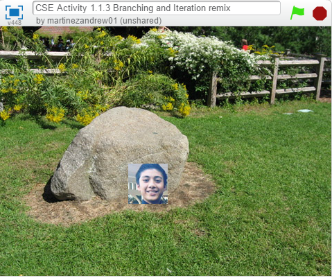
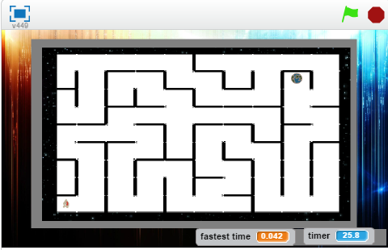
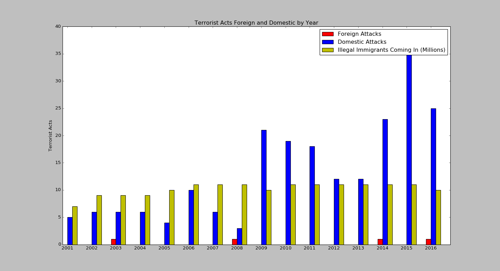
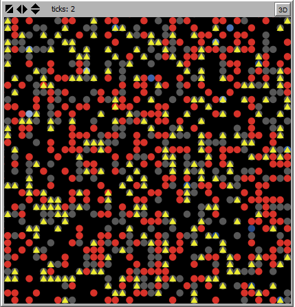

 <work log here
Flowchart The purpose of our data project was to find a correlation between illegal immigration and terrorist acts in the U.S. The purpose of this project was to show some of Machiavelli's ideal leadership qualities in a simulation and show how they would affect the citizens of that country.
Project #2 1.1.7 Scratch Game
Project #3: An english assignment on the Scottsboro Trial
in 1931 using repl.it and the coding language python.
Project #4: Using repl.it we had to make a game and my partner
and I decided to base it off a game called bingo. We chose
elements from the periodic table to use for our project.
Python - Data Project
